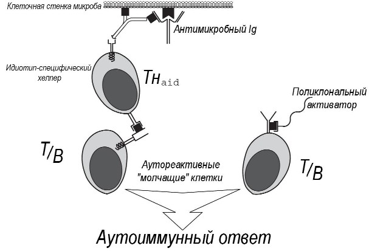

Обход механизмов аутотолерантности (перекрестная реактивность и молекулярная мимикрия)
В силу параллельной эволюции экзогенные патогены приобрели молекулярное сходство с эндогенными молекулами поражаемого макроорганизма, о чём уже шла речь при обсуждении противоинфекционного иммунитета (см. также выше “О монокаузализме”).Другим, еще более важным аспектом молекулярной мимикрии (Фарид-Надир, Д.С. Линтикам, 1988) cлужит способность нормальной иммунной системы имитировать антиидиотипами аутоантител структуру эпитопов антигенов. Ж.Линдеманн (1979) метко назвал это явление созданием иммунологических отображений антигенов. Данная форма мимикрии - физиологический элемент иммунологической памяти, супрессии и регуляции. Но обе формы мимикрии могут приводить к аутоаллергии. Мимикрия патогенов вызывает аутоаллергию, если индивид, благодаря наследственным особенностям своих антигенов и рецепторов системы ГКГС плохо различает определенные свои и чужие секвенциальные детерминанты.

Гораздо чаще имеется перекрест по линейным, секвенциальным детерминантам аутоантигенов и чужеродных антигенов, так как эволюционное разнообразие этих детерминант, формируемых первичной структурой антигенов (А.Я. Кульберг, 1985), гораздо меньше, чем конформационных. Между тем, именно секвенс-пептиды процессированного антигена контролируют поведение Т-хелперов.
Именно сходство или общность коротких пептидов, притом конкретно тех, которые, благодаря индивидуальным особенностям гаплотипа ГКГС, процессируются у предрасположенных пациентов антигенпредставляющими клетками, имеется ввиду, когда говорят о перекрестной иммунореактивности между альбумином коровьего молока и собственным инсулином, при развитии аутоиммунного сахарного диабета, между антигенами Klebsiella и соединительной ткани при анкилозирующем спондилите или миелина - при демиелинизирующих нейропатиях, между антигенами Proteus mirabilis и синовии - при ревматоидном артрите, высококонсервативными пептидами белков теплового шока микобактерий и разнообразными аутоиммунными синдромами. Имеется также общность коротких пептидов в М-протеине стрептококка и М-протеине сарколеммы кардиомиоцитов при ревматизме. Перекрестно реагирующий секвенциальный антиген микроба может поднять недостаточную концентрацию аутоантигена до уровня, позволяющего активировать подавленные аутореактивные Т-хелперы и увеличить их аффинитет во взаимодействии с антигенпредставляющими клетками (А.Ройт; 1994).
Большое значение при ряде аутоиммунопатий имеет перекрест между идиотипом аутоантитела и идиотипом антитела к микробу. Это вызывает активацию аутореактивных лимфоцитов-эффекторов не аутореактивными, а идиотип-специфическими Т-хелперами.
Идиотип-специфические хелперы нередко стимулируются антигенпредставляющими клетками, захватившими иммунный комплекс антител к микробу и антигена и процессировавшими пептид идиотипа этих антител. А.Кук и А.Лидьярд, впервые распознавшие подобный механизм аутоаллергии (1982), указывали, что именно так полисахарид К30 Klebsiella провоцирует образование аутоантител к ДНК, а протеогликан Streptococcus pyogenes - ревматоидных факторов. Обращает на себя внимание полное несходство в этих случаях химической природы и конформационных антигенных детерминант антигенов-мишеней, что не мешает косвенной мимикрии и перекресту. Подобная ситуация - не редкость и при неинфекционой патологии. Предполагается, например, что низкоаффинные естественные регуляторные аутоантитела к ДНК могут образовывать с антигеном комплекс, который процессируется АПК, вследствие чего антиидиотипический Т-хелпер срабатывает от эпитопов антитела и стимулирует усиленный ответ В-клонов на аутоантигенную часть комплекса.
Большое значение, особенно, при вирус-индуцированных аутоиммунопатиях, имеют перекресты между:
- антигеном и идиотипом аутоантитела
- аутоантиидиотипом против антител к вирусу и идиотипом аутоантител.
Один из наиболее поразительных примеров антиидиотипического перекреста с индукцией аутоаллергии - этиология и патогенез диффузного токсического зоба.
Гипертироз при данном заболевании вызван аутоантителами к ганглиозидной части рецептора тиротропного гормона (ТТГ) на тироцитах, а крайняя степень гиперплазии железы - другой субпопуляцией аутоантител против белковой части ТТГ-рецептора. Фарид-Надир и соавторы (1983) установили, что эти тироидстимулирующие аутоантитела развиваются по идиотип-антиидиотипическому механизму, в ответ на иммуноглобулины против ТТГ.
Любопытно, что поскольку анти-ТТГ-рецепторные антитела, вызывающие диффузный токсический зоб относятся к классу G, а IgG способны проходить через плаценту, то у некоторых детей, родившихся от матерей с гипертирозом выявляется неонатальный гипертироз, который проходит через несколько недель после рождения по мере распада материнских IgG. Кардиомиопатия при болезни фон Базедова вызвана особым клоном антисердечных аутоантител (А.У.Нэтан и соавт., 1983).
Избыточное количество антител против иных эпитопов рецептора для тиротропного гормона тироцитов может вызвать и блокаду рецепторов, и в результате развивается гипотироз на фоне повышенных концентраций ТТГ и тиролиберина. ТТГ и анти-ТТГ-рецепторные антитела конкурируют за связывание с ТТГ-рецепторами, при этом связь антител с рецепторами гораздо прочнее и длительнее, чем ТТГ. В семействе аутоиммунных тиропатий известны синдромы с избирательной аутоиммунной активацией или торможением только роста или только гормонообразующей функции железы, в зависимости от набора идиотипов аутоантител (Д.Дониак и соавт. 1982, В.М.Виерсинга и соавт., 1984). Доказано существование митогенных иммуноглобулинов для коры надпочечников (Л.П.Чурилов, 1985) и имеется гипотеза об их участии в развитии гиперплазии этого органа (Дж.Финк, Г.М. Билл, 1982, Дж.А. Андрада и соавт.; 1979).
Подобные аутоиммунопатии являются дизрегуляторными рецепторными болезнями и могут быть лишены проявлений аутоиммунной деструкции клеток-мишеней по причинам, указанным выше.
Их многообразие очень велико и раскрыто лишь частично, но это уже заставило признать аутоиммунное происхождение многих болезней, о связи которых с иммунопатологией ранее и не помышляли. Выше, в разрозненном виде, в качестве примеров, мы уже упоминали об этиологии и патогенезе многих аутоиммунопатий. В заключение данного раздела, перечислим ещё раз их расширенный список.
Имеются веские доказательства аутоиммунной антирецепторной природы таких разных расстройств, пернициозная анемия Аддисона-Бирмера с атрофическим гастритом (аутоиммунитет к гастриновому рецептору и водородному насосу обкладочных клеток - Б.Х.Тох, 1985, 1991), бесплодие (аутоантитела к рецептору ФСГ - В.Кьоцци и соавт, 1982); гастрит А и некоторые случаи язвенной болезни двенадцатиперстной кищки и желудка (аутоантитела к H2-гистаминовому рецептору слизистой желудка - С.Доби, Б.Лёнкеи 1982); myasthenia gravis (аутоантитела к никотинхолинэргическому рецептору моторных бляшек - Д.Драхманн, 1978) и синдром Ламберта-Итона (аутоантитела к пресинаптической мембране моторных нервных окончаний - А.Ройт,1994), аллергический ринит и некоторые формы астматического бронхита (аутоантитела к b2 -адренорецепторам - А. Огюстен и соавт., 1982), апластические анемии (аутоантитела к эритропоэтину, его рецептору и эритроидным клеткам-предшественникам - В.Найдеггер, 1984), болезнь Аддисона (аутоантитела к стероидгидроксилазам и к рецептору АКТГ - K. Крон и соавт., 1992), неспецифический язвенный колит и болезнь Крона (перекрестнореагирующие с кишкой антитела к Е.Сoli и аутоантитела к эндокринным клеткам кишечника - Н.И.Татишвили и соавт., 1988; Х.У. Джонс и соавт., 1983). Идут поиски антигенов-мишеней при витилиго (М.Блечер;1984), шизофрении, при которой постулировано наличие стимулирующих антидофаминрецепторных аутоантител (Дж.Г. Найт, А. Найт; 1984). При паркинсонизме причиной болезни тоже могут быть аутоантитела к дофаминовым рецепторам, но блокирующего характера. (Р.Котран и соавт.; 1994). Аутоаллергия отмечена при синдроме Кушинга (Д. Петраньи, 1983) синдроме Шихана (А.Пупляр, 1982) - и споры о возможной патогенетической или свидетельской роли аутоантител при этих расстройствах продолжаются. Доказана аутоиммунная природа многих случаев гипопаратиреоза (П.Буркхардт, 1982). Аутоиммунным заболеванием является первичный инсулинзависимый сахарный диабет I типа, а также некоторые формы инсулинорезистентного сахарного диабета с аутоантителами к инсулиновым рецепторам и ряд случаев криптогенной гипогликемии (Г.С.Эйзенбарт, 1984, Л.Тарделла и соавт., 1983). Аутоиммунитет к базальным мембранам обусловливает буллёзный пемфигоид, синдром Гудпасчера и ряд форм диффузного гломерулонефрита. Аутоаллергия к митохондриальным антигенам лежит в основе первичного билиарного цирроза, а к цитоскелетным белкам гепатоцитов - в основе активного хронического гепатита (П.Чандрасома, К.Тэйлор, 1998). Аутоиммунной оказалась и большая группа демиелинизирующих нервных болезней - рассеянный склероз, синдром Гильена-Барр, боковой амиотрофический склероз, подострый склерозирующий энцефалит, аллергический поствакцинальный и постинфекционный энцефаломиелит (Б.Цвейман, А.И.Левинсон, 1991). При всех этих нарушениях обнаружен интратекальный олигоклональный иммуноглобулиновый и клеточный аутоиммунный ответ против антигенов ЦНС, в частности, нейтрального гликолипида и основного белка миелина, провоцируемый у предрасположенных носителей определённых гаплотипов ГКГС, по-видимому, вирусными и бактериальными инфекциями. Это дополняется иммунокомплексной реакцией.
Имеются данные об аутоиммунной природе атеросклероза и некоторых гиперлипротеинемий (Г. Клерк, 1991; Ж.-Л. Бомон, В.Бомон; 1977). В то же время, ведутся попытки терапевтического применения аутоантиидиотипов и клонирования аутоантигенов, что может способствовать улучшению лечения и диагностики аутоимунопатий в будущем (А. Ройт, А. Кук; 1986; Р.Л. Коппел и соавт., 1989)
Итак, наиболее совершенный и индивидуализированный по отношению к патогенным воздействиям ответ организма - иммунный - служит источником многообразных аутоиммунных и аллергических расстройств, затрагивающих, поистине, каждый орган и каждую систему.
Иммунная система, как видно, тоже не всегда может чётко определить масштабы и мишень своего ответа.
В следующем разделе рассматриваются последствия недостаточной силы иммунных ответов - иммунодефицитные состояния.
|
|
|
|
|
|